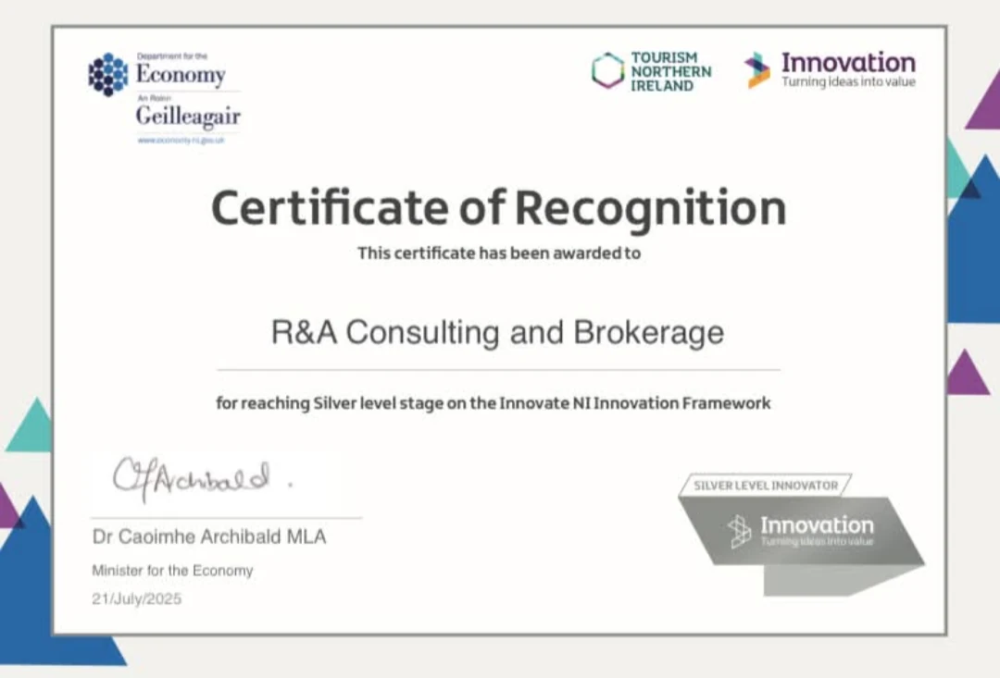

Research-led systems company · founder · public evidence
A research-led systems company built for more than one market.
Aureon Zorza Technologies is the technology and R&D programme of R&A Consulting and Brokerage Services Ltd. Harmonic Nexus Core (HNC) is its proposed common systems grammar. Aureon OS is the company-built, local-first software organism. Evidence OS is the cross-cutting provenance, authority and review control plane within Aureon OS. Mission blades are evidence-labelled routes for testing where that architecture may create value.
01 / Legal counterpartyR&A ConsultingNI696693
02 / Research-led systemsAureon ZorzaTechnology programme
03 / Proposed systems grammarHarmonic Nexus CoreCompany-authored research proposition
Official public source
A company record investors can open directly.
Companies House is the authoritative source for current company, filing, officer and control information. Use the live record for any time-sensitive statutory detail.
Live statutory sourceRead the current official record before relying on company information.
Companies House is the controlling current source for company status, officer and filing information.
Operating structure
One company. Five distinct public roles.
The structure separates legal authority, company strategy, the proposed research grammar, the software organism and its evidence-control plane under one founder-led direction.
R&A Consulting and Brokerage Services Ltd
The accountable legal counterparty and holder of the official company record.
Authority: Companies HouseAureon Zorza Technologies
The company strategy connecting research, engineering and evidence-labelled mission-blade routes. Aureon Institute is a company programme and publication identity; it is not a separate legal entity, university or accreditation.
Identity: technology and R&D programmeHarmonic Nexus Core
A company-authored and source-linked research proposition for organising cross-sector questions, relationships, models and tests. Publication does not establish independent validation.
Sources: Aureon Institute, ORCID and ZenodoAureon OS
The company-built, local-first software organism that hosts modular research, engineering and decision workflows. Public source does not establish production readiness.
Evidence: public repository and architectureEvidence OS
The provenance, authority and review control plane within Aureon OS. It keeps source, claim state, decision rights and read-back attached across workflows.
Boundary: architecture proposition; independent assurance remains openFounder & director
Gary Anthony Leckey
Gary leads company strategy, the HNC research direction and the Aureon OS build. That direction connects a proposed common systems grammar to an inspectable local-first software organism, with Evidence OS carrying provenance, authority and review controls while independent validation remains a separate milestone.
Company roleFounder-led direction
Proposed grammarHarmonic Nexus Core
Organism / control planeAureon OS / Evidence OS
Investment foundations
Inspectable foundations. Focused value milestones.
Aureon gives an investor direct routes into the company, platform and research, then names the milestones that can increase enterprise value.
Public foundations
- Official Northern Ireland company source
- Public Aureon OS repository and architecture
- Evidence OS provenance, authority and review model
- Source-linked HNC research with ORCID and DOI routes
- Evidence-labelled mission-blade application routes
- Company-held Innovate NI Silver certificate
What Aureon will prove next
- A measured design-partner workflow
- Independent architecture and security review
- A repeatable commercial entry point
- Domain-qualified sector validation
- Laboratory evidence for selected deep-tech options
Source and state accompany the claim.
Sensitive decisions remain review-gated.
Public gaps are recorded rather than concealed.
Company recognition
Recognised at Silver level by Innovate NI.
R&A Consulting and Brokerage received a Certificate of Recognition for reaching Silver level on the Innovate NI Innovation Framework, issued by the Department for the Economy with Tourism Northern Ireland and Innovation NI.
The company-held certificate is shown here as the direct source for the recognition.

Investor reading path
Understand the company. Inspect the research. Test the delivery thesis.
Start with HNC as the proposed common systems grammar, inspect the company-built Aureon OS software organism and its Evidence OS control plane, then compare each mission blade by current state and next validation.